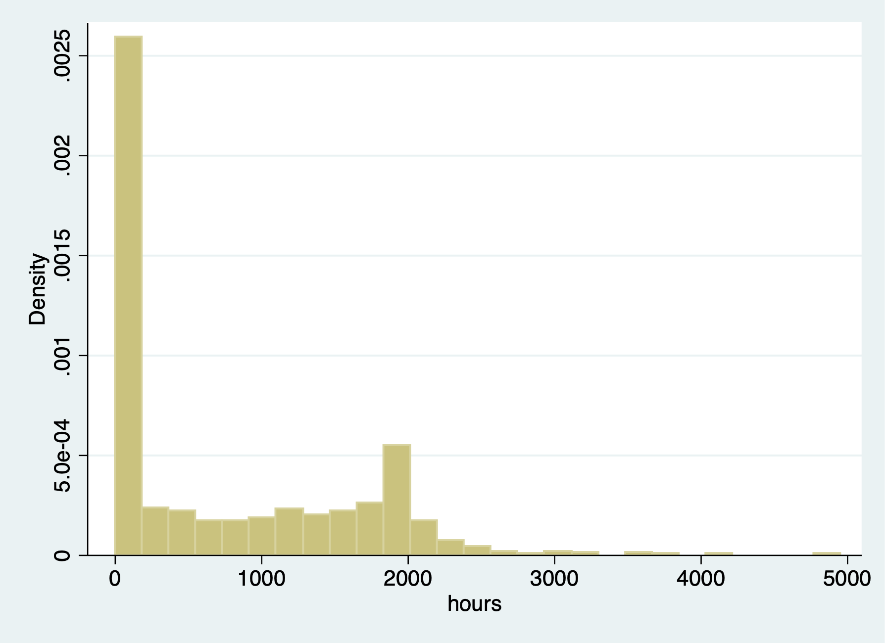

Samuel Rowe - Adapted from Wooldridge and Mitchell
. clear . set more off
Set Working Directory
. cd "/Users/Sam/Desktop/Econ 645/Data/Wooldridge" /Users/Sam/Desktop/Econ 645/Data/Wooldridge
. use mroz.dta, clear
Summarize in the labor force
. tabulate inlf
inlf │ Freq. Percent Cum.
────────────┼───────────────────────────────────
0 │ 325 43.16 43.16
1 │ 428 56.84 100.00
────────────┼───────────────────────────────────
Total │ 753 100.00
325 Women are not in the labor force and 428 Participating Our explanatory variables are non-wife income, education, experience, experience-squared, age, kids less than 6, kids greater than 6
. est clear
Logit
. eststo Logit: logit inlf nwifeinc educ exper expersq kidslt6 kidsge6
Iteration 0: log likelihood = -514.8732
Iteration 1: log likelihood = -422.78042
Iteration 2: log likelihood = -421.73851
Iteration 3: log likelihood = -421.73502
Iteration 4: log likelihood = -421.73502
Logistic regression Number of obs = 753
LR chi2(6) = 186.28
Prob > chi2 = 0.0000
Log likelihood = -421.73502 Pseudo R2 = 0.1809
─────────────┬────────────────────────────────────────────────────────────────
inlf │ Coef. Std. Err. z P>|z| [95% Conf. Interval]
─────────────┼────────────────────────────────────────────────────────────────
nwifeinc │ -.0301171 .0082431 -3.65 0.000 -.0462734 -.0139609
educ │ .2520038 .0425492 5.92 0.000 .168609 .3353987
exper │ .2057387 .0310518 6.63 0.000 .1448784 .266599
expersq │ -.003913 .0009994 -3.92 0.000 -.0058718 -.0019541
kidslt6 │ -.9175126 .1742458 -5.27 0.000 -1.259028 -.5759971
kidsge6 │ .2226164 .0683456 3.26 0.001 .0886616 .3565713
_cons │ -3.739707 .543217 -6.88 0.000 -4.804392 -2.675021
─────────────┴────────────────────────────────────────────────────────────────
Probit
. eststo Probit: probit inlf nwifeinc educ exper expersq kidslt6 kidsge6
Iteration 0: log likelihood = -514.8732
Iteration 1: log likelihood = -422.36847
Iteration 2: log likelihood = -421.80202
Iteration 3: log likelihood = -421.80161
Iteration 4: log likelihood = -421.80161
Probit regression Number of obs = 753
LR chi2(6) = 186.14
Prob > chi2 = 0.0000
Log likelihood = -421.80161 Pseudo R2 = 0.1808
─────────────┬────────────────────────────────────────────────────────────────
inlf │ Coef. Std. Err. z P>|z| [95% Conf. Interval]
─────────────┼────────────────────────────────────────────────────────────────
nwifeinc │ -.017188 .00474 -3.63 0.000 -.0264782 -.0078978
educ │ .1501412 .02471 6.08 0.000 .1017105 .1985719
exper │ .1240105 .0183233 6.77 0.000 .0880975 .1599236
expersq │ -.0023694 .0005913 -4.01 0.000 -.0035284 -.0012103
kidslt6 │ -.5543317 .1038244 -5.34 0.000 -.7578238 -.3508395
kidsge6 │ .1307901 .0399186 3.28 0.001 .0525511 .2090292
_cons │ -2.244553 .3146254 -7.13 0.000 -2.861207 -1.627899
─────────────┴────────────────────────────────────────────────────────────────
. esttab Logit Probit, mtitle
────────────────────────────────────────────
(1) (2)
Logit Probit
────────────────────────────────────────────
inlf
nwifeinc -0.0301*** -0.0172***
(-3.65) (-3.63)
educ 0.252*** 0.150***
(5.92) (6.08)
exper 0.206*** 0.124***
(6.63) (6.77)
expersq -0.00391*** -0.00237***
(-3.92) (-4.01)
kidslt6 -0.918*** -0.554***
(-5.27) (-5.34)
kidsge6 0.223** 0.131**
(3.26) (3.28)
_cons -3.740*** -2.245***
(-6.88) (-7.13)
────────────────────────────────────────────
N 753 753
────────────────────────────────────────────
t statistics in parentheses
* p<0.05, ** p<0.01, *** p<0.001
. est clear
LPM
. quietly reg inlf nwifeinc educ exper expersq age kidslt6 kidsge6
. eststo LPM: margins, dydx(*) post
Average marginal effects Number of obs = 753
Model VCE : OLS
Expression : Linear prediction, predict()
dy/dx w.r.t. : nwifeinc educ exper expersq age kidslt6 kidsge6
─────────────┬────────────────────────────────────────────────────────────────
│ Delta-method
│ dy/dx Std. Err. t P>|t| [95% Conf. Interval]
─────────────┼────────────────────────────────────────────────────────────────
nwifeinc │ -.0034052 .0014485 -2.35 0.019 -.0062488 -.0005616
educ │ .0379953 .007376 5.15 0.000 .023515 .0524756
exper │ .0394924 .0056727 6.96 0.000 .0283561 .0506287
expersq │ -.0005963 .0001848 -3.23 0.001 -.0009591 -.0002335
age │ -.0160908 .0024847 -6.48 0.000 -.0209686 -.011213
kidslt6 │ -.2618105 .0335058 -7.81 0.000 -.3275875 -.1960335
kidsge6 │ .0130122 .013196 0.99 0.324 -.0128935 .0389179
─────────────┴────────────────────────────────────────────────────────────────
Logit
. quietly logit inlf nwifeinc educ exper expersq age kidslt6 kidsge6
. eststo Logit: margins, dydx(*) post
Average marginal effects Number of obs = 753
Model VCE : OIM
Expression : Pr(inlf), predict()
dy/dx w.r.t. : nwifeinc educ exper expersq age kidslt6 kidsge6
─────────────┬────────────────────────────────────────────────────────────────
│ Delta-method
│ dy/dx Std. Err. z P>|z| [95% Conf. Interval]
─────────────┼────────────────────────────────────────────────────────────────
nwifeinc │ -.0038118 .0014824 -2.57 0.010 -.0067172 -.0009064
educ │ .0394965 .0072947 5.41 0.000 .0251992 .0537939
exper │ .0367641 .00515 7.14 0.000 .0266702 .046858
expersq │ -.0005633 .0001774 -3.18 0.001 -.0009109 -.0002156
age │ -.0157194 .0023808 -6.60 0.000 -.0203856 -.0110532
kidslt6 │ -.2577537 .0319416 -8.07 0.000 -.3203581 -.1951492
kidsge6 │ .0107348 .013333 0.81 0.421 -.0153974 .0368671
─────────────┴────────────────────────────────────────────────────────────────
Probit
. quietly probit inlf nwifeinc educ exper expersq age kidslt6 kidsge6
. eststo Probit: margins, dydx(*) post
Average marginal effects Number of obs = 753
Model VCE : OIM
Expression : Pr(inlf), predict()
dy/dx w.r.t. : nwifeinc educ exper expersq age kidslt6 kidsge6
─────────────┬────────────────────────────────────────────────────────────────
│ Delta-method
│ dy/dx Std. Err. z P>|z| [95% Conf. Interval]
─────────────┼────────────────────────────────────────────────────────────────
nwifeinc │ -.0036162 .0014414 -2.51 0.012 -.0064413 -.0007911
educ │ .0393703 .0072216 5.45 0.000 .0252161 .0535244
exper │ .0370974 .0051522 7.20 0.000 .0269993 .0471956
expersq │ -.0005675 .0001771 -3.20 0.001 -.0009146 -.0002204
age │ -.0158957 .0023587 -6.74 0.000 -.0205186 -.0112728
kidslt6 │ -.2611542 .0318597 -8.20 0.000 -.3235982 -.1987103
kidsge6 │ .0108287 .0130584 0.83 0.407 -.0147654 .0364227
─────────────┴────────────────────────────────────────────────────────────────
. esttab LPM Logit Probit, mtitle
────────────────────────────────────────────────────────────
(1) (2) (3)
LPM Logit Probit
────────────────────────────────────────────────────────────
nwifeinc -0.00341* -0.00381* -0.00362*
(-2.35) (-2.57) (-2.51)
educ 0.0380*** 0.0395*** 0.0394***
(5.15) (5.41) (5.45)
exper 0.0395*** 0.0368*** 0.0371***
(6.96) (7.14) (7.20)
expersq -0.000596** -0.000563** -0.000568**
(-3.23) (-3.18) (-3.20)
age -0.0161*** -0.0157*** -0.0159***
(-6.48) (-6.60) (-6.74)
kidslt6 -0.262*** -0.258*** -0.261***
(-7.81) (-8.07) (-8.20)
kidsge6 0.0130 0.0107 0.0108
(0.99) (0.81) (0.83)
────────────────────────────────────────────────────────────
N 753 753 753
────────────────────────────────────────────────────────────
t statistics in parentheses
* p<0.05, ** p<0.01, *** p<0.001
. est clear
LPM
. quietly reg inlf nwifeinc educ exper expersq age kidslt6 kidsge6
. eststo LPM: margins, dydx(*) atmeans post
Conditional marginal effects Number of obs = 753
Model VCE : OLS
Expression : Linear prediction, predict()
dy/dx w.r.t. : nwifeinc educ exper expersq age kidslt6 kidsge6
at : nwifeinc = 20.12896 (mean)
educ = 12.28685 (mean)
exper = 10.63081 (mean)
expersq = 178.0385 (mean)
age = 42.53785 (mean)
kidslt6 = .2377158 (mean)
kidsge6 = 1.353254 (mean)
─────────────┬────────────────────────────────────────────────────────────────
│ Delta-method
│ dy/dx Std. Err. t P>|t| [95% Conf. Interval]
─────────────┼────────────────────────────────────────────────────────────────
nwifeinc │ -.0034052 .0014485 -2.35 0.019 -.0062488 -.0005616
educ │ .0379953 .007376 5.15 0.000 .023515 .0524756
exper │ .0394924 .0056727 6.96 0.000 .0283561 .0506287
expersq │ -.0005963 .0001848 -3.23 0.001 -.0009591 -.0002335
age │ -.0160908 .0024847 -6.48 0.000 -.0209686 -.011213
kidslt6 │ -.2618105 .0335058 -7.81 0.000 -.3275875 -.1960335
kidsge6 │ .0130122 .013196 0.99 0.324 -.0128935 .0389179
─────────────┴────────────────────────────────────────────────────────────────
Logit
. quietly logit inlf nwifeinc educ exper expersq age kidslt6 kidsge6
. eststo Logit: margins, dydx(*) atmeans post
Conditional marginal effects Number of obs = 753
Model VCE : OIM
Expression : Pr(inlf), predict()
dy/dx w.r.t. : nwifeinc educ exper expersq age kidslt6 kidsge6
at : nwifeinc = 20.12896 (mean)
educ = 12.28685 (mean)
exper = 10.63081 (mean)
expersq = 178.0385 (mean)
age = 42.53785 (mean)
kidslt6 = .2377158 (mean)
kidsge6 = 1.353254 (mean)
─────────────┬────────────────────────────────────────────────────────────────
│ Delta-method
│ dy/dx Std. Err. z P>|z| [95% Conf. Interval]
─────────────┼────────────────────────────────────────────────────────────────
nwifeinc │ -.0051901 .0020482 -2.53 0.011 -.0092045 -.0011756
educ │ .0537773 .0105608 5.09 0.000 .0330785 .0744761
exper │ .0500569 .0078247 6.40 0.000 .0347209 .065393
expersq │ -.0007669 .0002477 -3.10 0.002 -.0012524 -.0002815
age │ -.021403 .0035398 -6.05 0.000 -.0283408 -.0144652
kidslt6 │ -.3509498 .0496395 -7.07 0.000 -.4482414 -.2536583
kidsge6 │ .0146162 .0181884 0.80 0.422 -.0210324 .0502649
─────────────┴────────────────────────────────────────────────────────────────
Probit
. quietly probit inlf nwifeinc educ exper expersq age kidslt6 kidsge6
. eststo Probit: margins, dydx(*) atmeans post
Conditional marginal effects Number of obs = 753
Model VCE : OIM
Expression : Pr(inlf), predict()
dy/dx w.r.t. : nwifeinc educ exper expersq age kidslt6 kidsge6
at : nwifeinc = 20.12896 (mean)
educ = 12.28685 (mean)
exper = 10.63081 (mean)
expersq = 178.0385 (mean)
age = 42.53785 (mean)
kidslt6 = .2377158 (mean)
kidsge6 = 1.353254 (mean)
─────────────┬────────────────────────────────────────────────────────────────
│ Delta-method
│ dy/dx Std. Err. z P>|z| [95% Conf. Interval]
─────────────┼────────────────────────────────────────────────────────────────
nwifeinc │ -.0046962 .0018903 -2.48 0.013 -.0084012 -.0009913
educ │ .0511287 .0098592 5.19 0.000 .0318051 .0704523
exper │ .0481771 .0073278 6.57 0.000 .0338149 .0625392
expersq │ -.0007371 .0002347 -3.14 0.002 -.001197 -.0002771
age │ -.0206432 .0033079 -6.24 0.000 -.0271265 -.0141598
kidslt6 │ -.3391514 .0463581 -7.32 0.000 -.4300117 -.2482911
kidsge6 │ .0140628 .0169852 0.83 0.408 -.0192275 .0473531
─────────────┴────────────────────────────────────────────────────────────────
Compare
. esttab LPM Logit Probit, mtitle
────────────────────────────────────────────────────────────
(1) (2) (3)
LPM Logit Probit
────────────────────────────────────────────────────────────
nwifeinc -0.00341* -0.00519* -0.00470*
(-2.35) (-2.53) (-2.48)
educ 0.0380*** 0.0538*** 0.0511***
(5.15) (5.09) (5.19)
exper 0.0395*** 0.0501*** 0.0482***
(6.96) (6.40) (6.57)
expersq -0.000596** -0.000767** -0.000737**
(-3.23) (-3.10) (-3.14)
age -0.0161*** -0.0214*** -0.0206***
(-6.48) (-6.05) (-6.24)
kidslt6 -0.262*** -0.351*** -0.339***
(-7.81) (-7.07) (-7.32)
kidsge6 0.0130 0.0146 0.0141
(0.99) (0.80) (0.83)
────────────────────────────────────────────────────────────
N 753 753 753
────────────────────────────────────────────────────────────
t statistics in parentheses
* p<0.05, ** p<0.01, *** p<0.001
LPM
. est clear
. quietly reg inlf nwifeinc educ exper expersq age kidslt6 kidsge6
. eststo lpm: margins, at(educ=(0(2)20)) post
Predictive margins Number of obs = 753
Model VCE : OLS
Expression : Linear prediction, predict()
1._at : educ = 0
2._at : educ = 2
3._at : educ = 4
4._at : educ = 6
5._at : educ = 8
6._at : educ = 10
7._at : educ = 12
8._at : educ = 14
9._at : educ = 16
10._at : educ = 18
11._at : educ = 20
─────────────┬────────────────────────────────────────────────────────────────
│ Delta-method
│ Margin Std. Err. t P>|t| [95% Conf. Interval]
─────────────┼────────────────────────────────────────────────────────────────
_at │
1 │ .1015504 .091955 1.10 0.270 -.0789714 .2820723
2 │ .177541 .0774562 2.29 0.022 .0254827 .3295993
3 │ .2535316 .0630748 4.02 0.000 .1297062 .3773571
4 │ .3295222 .0489147 6.74 0.000 .2334952 .4255492
5 │ .4055128 .0352435 11.51 0.000 .3363244 .4747013
6 │ .4815034 .0229524 20.98 0.000 .4364444 .5265625
7 │ .557494 .0157087 35.49 0.000 .5266554 .5883327
8 │ .6334846 .020049 31.60 0.000 .5941254 .6728439
9 │ .7094753 .0315024 22.52 0.000 .6476311 .7713194
10 │ .7854659 .0449232 17.48 0.000 .6972748 .8736569
11 │ .8614565 .0589832 14.61 0.000 .7456633 .9772496
─────────────┴────────────────────────────────────────────────────────────────
. marginsplot, yline(0)
Variables that uniquely identify margins: educ
Logit
. quietly logit inlf nwifeinc educ exper expersq kidslt6 kidsge6
. eststo logit1: margins, at(educ=(0(2)20)) post
Predictive margins Number of obs = 753
Model VCE : OIM
Expression : Pr(inlf), predict()
1._at : educ = 0
2._at : educ = 2
3._at : educ = 4
4._at : educ = 6
5._at : educ = 8
6._at : educ = 10
7._at : educ = 12
8._at : educ = 14
9._at : educ = 16
10._at : educ = 18
11._at : educ = 20
─────────────┬────────────────────────────────────────────────────────────────
│ Delta-method
│ Margin Std. Err. z P>|z| [95% Conf. Interval]
─────────────┼────────────────────────────────────────────────────────────────
_at │
1 │ .0862997 .0378791 2.28 0.023 .0120581 .1605413
2 │ .1307839 .04457 2.93 0.003 .0434283 .2181396
3 │ .1911164 .0475215 4.02 0.000 .097976 .2842567
4 │ .2675469 .0448132 5.97 0.000 .1797146 .3553791
5 │ .3575117 .0362904 9.85 0.000 .2863838 .4286396
6 │ .455911 .024513 18.60 0.000 .4078663 .5039556
7 │ .5562468 .0165243 33.66 0.000 .5238597 .5886338
8 │ .6519779 .0204676 31.85 0.000 .6118622 .6920936
9 │ .7376484 .0281232 26.23 0.000 .6825279 .7927688
10 │ .8096698 .0325919 24.84 0.000 .7457909 .8735486
11 │ .8666826 .0327653 26.45 0.000 .8024638 .9309015
─────────────┴────────────────────────────────────────────────────────────────
. marginsplot, yline(0)
Variables that uniquely identify margins: educ
Probit
. quietly probit inlf nwifeinc educ exper expersq age kidslt6 kidsge6
. eststo probit1: margins, at(educ=(0(2)20)) post
Predictive margins Number of obs = 753
Model VCE : OIM
Expression : Pr(inlf), predict()
1._at : educ = 0
2._at : educ = 2
3._at : educ = 4
4._at : educ = 6
5._at : educ = 8
6._at : educ = 10
7._at : educ = 12
8._at : educ = 14
9._at : educ = 16
10._at : educ = 18
11._at : educ = 20
─────────────┬────────────────────────────────────────────────────────────────
│ Delta-method
│ Margin Std. Err. z P>|z| [95% Conf. Interval]
─────────────┼────────────────────────────────────────────────────────────────
_at │
1 │ .1315922 .055059 2.39 0.017 .0236785 .2395059
2 │ .1833441 .0570249 3.22 0.001 .0715773 .2951109
3 │ .2455272 .0543798 4.52 0.000 .1389447 .3521097
4 │ .3168216 .0470756 6.73 0.000 .2245552 .409088
5 │ .3949415 .0360827 10.95 0.000 .3242206 .4656623
6 │ .4768675 .0237722 20.06 0.000 .4302749 .5234602
7 │ .5592018 .0159547 35.05 0.000 .5279311 .5904724
8 │ .6385748 .0200316 31.88 0.000 .5993136 .677836
9 │ .7120285 .0288142 24.71 0.000 .6555538 .7685032
10 │ .7773109 .0357596 21.74 0.000 .7072234 .8473984
11 │ .8330432 .0391944 21.25 0.000 .7562235 .9098629
─────────────┴────────────────────────────────────────────────────────────────
. marginsplot, yline(0)
Variables that uniquely identify margins: educ
. coefplot lpm logit1, at recast(line) ciopts(recast(rline) lpattern(dash)) . coefplot lpm probit1, at recast(line) ciopts(recast(rline) lpattern(dash)) . coefplot logit1 probit1, at recast(line) ciopts(recast(rline) lpattern(dash))
LPM
. quietly reg inlf nwifeinc educ exper expersq age kidslt6 kidsge6
. margins, dydx(kidslt6) at(educ=(0(2)20))
Average marginal effects Number of obs = 753
Model VCE : OLS
Expression : Linear prediction, predict()
dy/dx w.r.t. : kidslt6
1._at : educ = 0
2._at : educ = 2
3._at : educ = 4
4._at : educ = 6
5._at : educ = 8
6._at : educ = 10
7._at : educ = 12
8._at : educ = 14
9._at : educ = 16
10._at : educ = 18
11._at : educ = 20
─────────────┬────────────────────────────────────────────────────────────────
│ Delta-method
│ dy/dx Std. Err. t P>|t| [95% Conf. Interval]
─────────────┼────────────────────────────────────────────────────────────────
kidslt6 │
_at │
1 │ -.2618105 .0335058 -7.81 0.000 -.3275875 -.1960335
2 │ -.2618105 .0335058 -7.81 0.000 -.3275875 -.1960335
3 │ -.2618105 .0335058 -7.81 0.000 -.3275875 -.1960335
4 │ -.2618105 .0335058 -7.81 0.000 -.3275875 -.1960335
5 │ -.2618105 .0335058 -7.81 0.000 -.3275875 -.1960335
6 │ -.2618105 .0335058 -7.81 0.000 -.3275875 -.1960335
7 │ -.2618105 .0335058 -7.81 0.000 -.3275875 -.1960335
8 │ -.2618105 .0335058 -7.81 0.000 -.3275875 -.1960335
9 │ -.2618105 .0335058 -7.81 0.000 -.3275875 -.1960335
10 │ -.2618105 .0335058 -7.81 0.000 -.3275875 -.1960335
11 │ -.2618105 .0335058 -7.81 0.000 -.3275875 -.1960335
─────────────┴────────────────────────────────────────────────────────────────
. marginsplot, yline(0)
Variables that uniquely identify margins: educ
Logit
. quietly logit inlf nwifeinc educ exper expersq kidslt6 kidsge6
. margins, dydx(kidslt6) at(educ=(0(2)20))
Average marginal effects Number of obs = 753
Model VCE : OIM
Expression : Pr(inlf), predict()
dy/dx w.r.t. : kidslt6
1._at : educ = 0
2._at : educ = 2
3._at : educ = 4
4._at : educ = 6
5._at : educ = 8
6._at : educ = 10
7._at : educ = 12
8._at : educ = 14
9._at : educ = 16
10._at : educ = 18
11._at : educ = 20
─────────────┬────────────────────────────────────────────────────────────────
│ Delta-method
│ dy/dx Std. Err. z P>|z| [95% Conf. Interval]
─────────────┼────────────────────────────────────────────────────────────────
kidslt6 │
_at │
1 │ -.0677567 .0262236 -2.58 0.010 -.1191539 -.0163594
2 │ -.0949468 .0281434 -3.37 0.001 -.1501069 -.0397867
3 │ -.1248173 .0285395 -4.37 0.000 -.1807537 -.0688808
4 │ -.1526688 .0293293 -5.21 0.000 -.2101531 -.0951844
5 │ -.1732958 .0313347 -5.53 0.000 -.2347106 -.111881
6 │ -.1829484 .0327734 -5.58 0.000 -.2471831 -.1187137
7 │ -.1803418 .0319215 -5.65 0.000 -.2429069 -.1177768
8 │ -.1665232 .0289231 -5.76 0.000 -.2232115 -.1098349
9 │ -.1442912 .0254362 -5.67 0.000 -.1941452 -.0944372
10 │ -.1175221 .0231237 -5.08 0.000 -.1628437 -.0722005
11 │ -.0902871 .0218973 -4.12 0.000 -.1332051 -.0473691
─────────────┴────────────────────────────────────────────────────────────────
. marginsplot, yline(0)
Variables that uniquely identify margins: educ
. graph export "/Users/Sam/Desktop/Econ 645/Stata/week8_logitinlf.png", replace
(file /Users/Sam/Desktop/Econ 645/Stata/week8_logitinlf.png written in PNG format)
Probit
. quietly probit inlf nwifeinc educ exper expersq age kidslt6 kidsge6
. margins, dydx(kidslt6) at(educ=(0(2)20))
Average marginal effects Number of obs = 753
Model VCE : OIM
Expression : Pr(inlf), predict()
dy/dx w.r.t. : kidslt6
1._at : educ = 0
2._at : educ = 2
3._at : educ = 4
4._at : educ = 6
5._at : educ = 8
6._at : educ = 10
7._at : educ = 12
8._at : educ = 14
9._at : educ = 16
10._at : educ = 18
11._at : educ = 20
─────────────┬────────────────────────────────────────────────────────────────
│ Delta-method
│ dy/dx Std. Err. z P>|z| [95% Conf. Interval]
─────────────┼────────────────────────────────────────────────────────────────
kidslt6 │
_at │
1 │ -.153748 .0455045 -3.38 0.001 -.2429352 -.0645607
2 │ -.1893831 .0408614 -4.63 0.000 -.2694699 -.1092962
3 │ -.2223621 .0360335 -6.17 0.000 -.2929864 -.1517377
4 │ -.2492771 .033371 -7.47 0.000 -.3146829 -.1838712
5 │ -.2672253 .0331963 -8.05 0.000 -.3322889 -.2021617
6 │ -.2743121 .0335951 -8.17 0.000 -.3401572 -.208467
7 │ -.2699501 .032832 -8.22 0.000 -.3342997 -.2056006
8 │ -.254902 .030869 -8.26 0.000 -.3154042 -.1943998
9 │ -.2310833 .0292123 -7.91 0.000 -.2883384 -.1738282
10 │ -.2011899 .0295232 -6.81 0.000 -.2590542 -.1433256
11 │ -.1682404 .0317255 -5.30 0.000 -.2304211 -.1060596
─────────────┴────────────────────────────────────────────────────────────────
. marginsplot, yline(0)
Variables that uniquely identify margins: educ
Lesson: 1) Tobit and OLS have the same sign; 2) Tobit and OLS magnitudes are not directly comparable. We need an adjustment factor, or use marginal effects.
We have data on married women’ annual labor supply with hours of work for wage in the labor force. There are 428 women employed with hours, and 325 women have no hours. Since we have a sizable about of 0 (corner soluation), we can use a Tobit model.
. use mroz.dta, clear
Summarize hours
. sum hours
Variable │ Obs Mean Std. Dev. Min Max
─────────────┼─────────────────────────────────────────────────────────
hours │ 753 740.5764 871.3142 0 4950
. tab hours if hours == 0
hours │ Freq. Percent Cum.
────────────┼───────────────────────────────────
0 │ 325 100.00 100.00
────────────┼───────────────────────────────────
Total │ 325 100.00
tab hours inlf
. tabstat hours, by(inlf) stat(mean median sd)
Summary for variables: hours
by categories of: inlf
inlf │ mean p50 sd
─────────┼──────────────────────────────
0 │ 0 0 0
1 │ 1302.93 1365.5 776.2744
─────────┼──────────────────────────────
Total │ 740.5764 288 871.3142
─────────┴──────────────────────────────
We have 325 women who had 0 hours
. histogram hours (bin=27, start=0, width=183.33333) . graph export "/Users/Sam/Desktop/Econ 645/Stata/week8_hourhist.png", replace (file /Users/Sam/Desktop/Econ 645/Stata/week8_hourhist.png written in PNG format)
 We have corner solution for women have 0 hours of labor
The range for women who do have working hours - ranges from 12 to 4950 hours
. sum hours if hours > 0
Variable │ Obs Mean Std. Dev. Min Max
─────────────┼─────────────────────────────────────────────────────────
hours │ 428 1302.93 776.2744 12 4950
OLS Model
. est clear
. eststo OLS: reg hours nwifeinc educ exper expersq age kidslt6 kidsge6
Source │ SS df MS Number of obs = 753
─────────────┼────────────────────────────────── F(7, 745) = 38.50
Model │ 151647606 7 21663943.7 Prob > F = 0.0000
Residual │ 419262118 745 562767.944 R-squared = 0.2656
─────────────┼────────────────────────────────── Adj R-squared = 0.2587
Total │ 570909724 752 759188.463 Root MSE = 750.18
─────────────┬────────────────────────────────────────────────────────────────
hours │ Coef. Std. Err. t P>|t| [95% Conf. Interval]
─────────────┼────────────────────────────────────────────────────────────────
nwifeinc │ -3.446636 2.544 -1.35 0.176 -8.440898 1.547626
educ │ 28.76112 12.95459 2.22 0.027 3.329283 54.19297
exper │ 65.67251 9.962983 6.59 0.000 46.11365 85.23138
expersq │ -.7004939 .3245501 -2.16 0.031 -1.337635 -.0633524
age │ -30.51163 4.363868 -6.99 0.000 -39.07858 -21.94469
kidslt6 │ -442.0899 58.8466 -7.51 0.000 -557.6148 -326.565
kidsge6 │ -32.77923 23.17622 -1.41 0.158 -78.2777 12.71924
_cons │ 1330.482 270.7846 4.91 0.000 798.8906 1862.074
─────────────┴────────────────────────────────────────────────────────────────
. margins
Predictive margins Number of obs = 753
Model VCE : OLS
Expression : Linear prediction, predict()
─────────────┬────────────────────────────────────────────────────────────────
│ Delta-method
│ Margin Std. Err. t P>|t| [95% Conf. Interval]
─────────────┼────────────────────────────────────────────────────────────────
_cons │ 740.5764 27.33803 27.09 0.000 686.9076 794.2451
─────────────┴────────────────────────────────────────────────────────────────
Tobit Model
. eststo TOBIT: tobit hours nwifeinc educ exper expersq age kidslt6 kidsge6, ll(0)
Tobit regression Number of obs = 753
LR chi2(7) = 271.59
Prob > chi2 = 0.0000
Log likelihood = -3819.0946 Pseudo R2 = 0.0343
─────────────┬────────────────────────────────────────────────────────────────
hours │ Coef. Std. Err. t P>|t| [95% Conf. Interval]
─────────────┼────────────────────────────────────────────────────────────────
nwifeinc │ -8.814243 4.459096 -1.98 0.048 -17.56811 -.0603724
educ │ 80.64561 21.58322 3.74 0.000 38.27453 123.0167
exper │ 131.5643 17.27938 7.61 0.000 97.64231 165.4863
expersq │ -1.864158 .5376615 -3.47 0.001 -2.919667 -.8086479
age │ -54.40501 7.418496 -7.33 0.000 -68.96862 -39.8414
kidslt6 │ -894.0217 111.8779 -7.99 0.000 -1113.655 -674.3887
kidsge6 │ -16.218 38.64136 -0.42 0.675 -92.07675 59.64075
_cons │ 965.3053 446.4358 2.16 0.031 88.88528 1841.725
─────────────┼────────────────────────────────────────────────────────────────
/sigma │ 1122.022 41.57903 1040.396 1203.647
─────────────┴────────────────────────────────────────────────────────────────
325 left-censored observations at hours <= 0
428 uncensored observations
0 right-censored observations
. quietly sum exper
. local exp2=r(mean)^2
Using ystar tells Stata to act like there is no censoring even though the model allows for it https://www.statalist.org/forums/forum/general-stata-discussion/general/1531196-tobit-marginal-effects
. margins, dydx(*) predict(ystar(0,.)) at(expersq=`exp2')
Average marginal effects Number of obs = 753
Model VCE : OIM
Expression : E(hours*|hours>0), predict(ystar(0,.))
dy/dx w.r.t. : nwifeinc educ exper expersq age kidslt6 kidsge6
at : expersq = 113.0141
─────────────┬────────────────────────────────────────────────────────────────
│ Delta-method
│ dy/dx Std. Err. z P>|z| [95% Conf. Interval]
─────────────┼────────────────────────────────────────────────────────────────
nwifeinc │ -5.223903 2.639553 -1.98 0.048 -10.39733 -.0504745
educ │ 47.79592 12.7368 3.75 0.000 22.83224 72.7596
exper │ 77.9737 9.900685 7.88 0.000 58.56872 97.37869
expersq │ -1.104823 .316282 -3.49 0.000 -1.724724 -.4849218
age │ -32.24401 4.348403 -7.42 0.000 -40.76672 -23.72129
kidslt6 │ -529.8564 65.40462 -8.10 0.000 -658.0471 -401.6657
kidsge6 │ -9.611857 22.90535 -0.42 0.675 -54.50553 35.28181
─────────────┴────────────────────────────────────────────────────────────────
. margins, dydx(*) predict(ystar(0,.)) at(expersq=`exp2')
Average marginal effects Number of obs = 753
Model VCE : OIM
Expression : E(hours*|hours>0), predict(ystar(0,.))
dy/dx w.r.t. : nwifeinc educ exper expersq age kidslt6 kidsge6
at : expersq = 113.0141
─────────────┬────────────────────────────────────────────────────────────────
│ Delta-method
│ dy/dx Std. Err. z P>|z| [95% Conf. Interval]
─────────────┼────────────────────────────────────────────────────────────────
nwifeinc │ -5.223903 2.639553 -1.98 0.048 -10.39733 -.0504745
educ │ 47.79592 12.7368 3.75 0.000 22.83224 72.7596
exper │ 77.9737 9.900685 7.88 0.000 58.56872 97.37869
expersq │ -1.104823 .316282 -3.49 0.000 -1.724724 -.4849218
age │ -32.24401 4.348403 -7.42 0.000 -40.76672 -23.72129
kidslt6 │ -529.8564 65.40462 -8.10 0.000 -658.0471 -401.6657
kidsge6 │ -9.611857 22.90535 -0.42 0.675 -54.50553 35.28181
─────────────┴────────────────────────────────────────────────────────────────
. margins, dydx(*) predict(ystar(0,.)) at(expersq=`exp2') atmeans
Conditional marginal effects Number of obs = 753
Model VCE : OIM
Expression : E(hours*|hours>0), predict(ystar(0,.))
dy/dx w.r.t. : nwifeinc educ exper expersq age kidslt6 kidsge6
at : nwifeinc = 20.12896 (mean)
educ = 12.28685 (mean)
exper = 10.63081 (mean)
expersq = 113.0141
age = 42.53785 (mean)
kidslt6 = .2377158 (mean)
kidsge6 = 1.353254 (mean)
─────────────┬────────────────────────────────────────────────────────────────
│ Delta-method
│ dy/dx Std. Err. z P>|z| [95% Conf. Interval]
─────────────┼────────────────────────────────────────────────────────────────
nwifeinc │ -5.687381 2.877882 -1.98 0.048 -11.32793 -.0468358
educ │ 52.03649 13.82013 3.77 0.000 24.94954 79.12345
exper │ 84.89173 12.39757 6.85 0.000 60.59293 109.1905
expersq │ -1.202846 .3666136 -3.28 0.001 -1.921395 -.4842964
age │ -35.10478 4.669466 -7.52 0.000 -44.25676 -25.95279
kidslt6 │ -576.8666 70.92986 -8.13 0.000 -715.8866 -437.8466
kidsge6 │ -10.46465 24.93972 -0.42 0.675 -59.34561 38.41632
─────────────┴────────────────────────────────────────────────────────────────
Compare our results
. esttab OLS TOBIT, mtitle
────────────────────────────────────────────
(1) (2)
OLS TOBIT
────────────────────────────────────────────
main
nwifeinc -3.447 -8.814*
(-1.35) (-1.98)
educ 28.76* 80.65***
(2.22) (3.74)
exper 65.67*** 131.6***
(6.59) (7.61)
expersq -0.700* -1.864***
(-2.16) (-3.47)
age -30.51*** -54.41***
(-6.99) (-7.33)
kidslt6 -442.1*** -894.0***
(-7.51) (-7.99)
kidsge6 -32.78 -16.22
(-1.41) (-0.42)
_cons 1330.5*** 965.3*
(4.91) (2.16)
────────────────────────────────────────────
sigma
_cons 1122.0***
(26.99)
────────────────────────────────────────────
N 753 753
────────────────────────────────────────────
t statistics in parentheses
* p<0.05, ** p<0.01, *** p<0.001
Compare Graphs
. est clear
OLS Model
. quietly reg hours nwifeinc educ exper expersq age kidslt6 kidsge6
. eststo OLS: margins, at(educ=(0(2)20)) post
Predictive margins Number of obs = 753
Model VCE : OLS
Expression : Linear prediction, predict()
1._at : educ = 0
2._at : educ = 2
3._at : educ = 4
4._at : educ = 6
5._at : educ = 8
6._at : educ = 10
7._at : educ = 12
8._at : educ = 14
9._at : educ = 16
10._at : educ = 18
11._at : educ = 20
─────────────┬────────────────────────────────────────────────────────────────
│ Delta-method
│ Margin Std. Err. t P>|t| [95% Conf. Interval]
─────────────┼────────────────────────────────────────────────────────────────
_at │
1 │ 387.1927 161.5017 2.40 0.017 70.14 704.2453
2 │ 444.7149 136.0372 3.27 0.001 177.6531 711.7767
3 │ 502.2372 110.779 4.53 0.000 284.761 719.7133
4 │ 559.7594 85.9094 6.52 0.000 391.1061 728.4127
5 │ 617.2817 61.89861 9.97 0.000 495.7652 738.7981
6 │ 674.8039 40.31156 16.74 0.000 595.6661 753.9417
7 │ 732.3262 27.58943 26.54 0.000 678.1639 786.4884
8 │ 789.8484 35.21225 22.43 0.000 720.7214 858.9754
9 │ 847.3707 55.3281 15.32 0.000 738.7531 955.9882
10 │ 904.8929 78.89908 11.47 0.000 750.0019 1059.784
11 │ 962.4152 103.593 9.29 0.000 759.0463 1165.784
─────────────┴────────────────────────────────────────────────────────────────
Tobit Model
. quietly tobit hours nwifeinc educ exper expersq age kidslt6 kidsge6, ll(0)
. eststo Tobit: margins, at(educ=(0(2)20)) predict(e(0,6000)) post
Predictive margins Number of obs = 753
Model VCE : OIM
Expression : E(hours|0<hours<6000), predict(e(0,6000))
1._at : educ = 0
2._at : educ = 2
3._at : educ = 4
4._at : educ = 6
5._at : educ = 8
6._at : educ = 10
7._at : educ = 12
8._at : educ = 14
9._at : educ = 16
10._at : educ = 18
11._at : educ = 20
─────────────┬────────────────────────────────────────────────────────────────
│ Delta-method
│ Margin Std. Err. z P>|z| [95% Conf. Interval]
─────────────┼────────────────────────────────────────────────────────────────
_at │
1 │ 727.4644 76.74259 9.48 0.000 577.0517 877.8772
2 │ 773.4964 71.05237 10.89 0.000 634.2364 912.7565
3 │ 823.5401 63.95927 12.88 0.000 698.1822 948.8979
4 │ 877.8933 55.47809 15.82 0.000 769.1582 986.6283
5 │ 936.8485 45.95104 20.39 0.000 846.7861 1026.911
6 │ 1000.685 36.67591 27.28 0.000 928.8013 1072.568
7 │ 1069.659 31.51807 33.94 0.000 1007.885 1131.433
8 │ 1143.997 36.60999 31.25 0.000 1072.242 1215.751
9 │ 1223.883 52.37388 23.37 0.000 1121.232 1326.534
10 │ 1309.452 75.03347 17.45 0.000 1162.39 1456.515
11 │ 1400.783 102.4283 13.68 0.000 1200.027 1601.539
─────────────┴────────────────────────────────────────────────────────────────
. coefplot (OLS, ciopts(recast(rline) lpattern(solid))) /// > (Tobit, ciopts(recast(rline) lpattern(dash))), at recast(line) . graph export "/Users/Sam/Desktop/Econ 645/Stata/week8_tobitols.png", replace (file /Users/Sam/Desktop/Econ 645/Stata/week8_tobitols.png written in PNG format)
Set Working Directory
. cd "/Users/Sam/Desktop/Econ 645/Data/Mitchell" /Users/Sam/Desktop/Econ 645/Data/Mitchell
One thing Stata easily provides are commands and options for subgroup analysis. We can use the by prefix command to create and analyze subgroups or cross-sectional units in a panel data set.
Tabulate is a very helpful command to analyze categorical variables, or occassionally look through continuous variables (as long as there aren’t too many values). The tabulate command has an option to summarize a continuous variable when tabulating categorical variables.
. use wws2, clear
(Working Women Survey w/fixes)
. tabulate married, summarize(wage)
│ Summary of hourly wage
married │ Mean Std. Dev. Freq.
────────────┼────────────────────────────────────
0 │ 8.0920006 6.354849 804
1 │ 7.6319496 5.5017864 1,440
────────────┼────────────────────────────────────
Total │ 7.7967807 5.8245895 2,244
Another option is using the bysort prefix command
. bysort married: summarize wage
─────────────────────────────────────────────────────────────────────────────────────────────────────────────────
-> married = 0
Variable │ Obs Mean Std. Dev. Min Max
─────────────┼─────────────────────────────────────────────────────────
wage │ 804 8.092001 6.354849 0 40.19808
─────────────────────────────────────────────────────────────────────────────────────────────────────────────────
-> married = 1
Variable │ Obs Mean Std. Dev. Min Max
─────────────┼─────────────────────────────────────────────────────────
wage │ 1,440 7.63195 5.501786 1.004952 40.74659
We can also correlate data within groups instead of using qualifiers and additional statements With qualifiers
. correlate wage age if married == 0
(obs=804)
│ wage age
─────────────┼──────────────────
wage │ 1.0000
age │ -0.0185 1.0000
. correlate wage age if married == 1
(obs=1,440)
│ wage age
─────────────┼──────────────────
wage │ 1.0000
age │ 0.0049 1.0000
Using bysort accomplishes this in one command
. bysort married: correlate wage age
─────────────────────────────────────────────────────────────────────────────────────────────────────────────────
-> married = 0
(obs=804)
│ wage age
─────────────┼──────────────────
wage │ 1.0000
age │ -0.0185 1.0000
─────────────────────────────────────────────────────────────────────────────────────────────────────────────────
-> married = 1
(obs=1,440)
│ wage age
─────────────┼──────────────────
wage │ 1.0000
age │ 0.0049 1.0000
Using bysort accomplishes even faster if we have a categorical variable with many categories
. bysort race: correlate wage age
─────────────────────────────────────────────────────────────────────────────────────────────────────────────────
-> race = 1
(obs=1,637)
│ wage age
─────────────┼──────────────────
wage │ 1.0000
age │ 0.0017 1.0000
─────────────────────────────────────────────────────────────────────────────────────────────────────────────────
-> race = 2
(obs=581)
│ wage age
─────────────┼──────────────────
wage │ 1.0000
age │ -0.0331 1.0000
─────────────────────────────────────────────────────────────────────────────────────────────────────────────────
-> race = 3
(obs=26)
│ wage age
─────────────┼──────────────────
wage │ 1.0000
age │ -0.2194 1.0000
The by prefix command and the egen command is a powerful combination that makes aggregating group statistics much easier than other statistical software packages Bysort and egen makes aggregating by groups much easier than other software. R has aggregate which is flexible and powerful, but requires more coding.
I’m not the biggest fan of Mitchell’s examples with bysort var: egen, but they get the job done. I would like us to use some CPS examples with bysort and egen.
With bysort var: egen we can calculate subgroup statistics, counts, summations with one easy line of code
. use tv1, clear
. list, sepby(kidid)
┌────────────────────────────────────────────┐
│ kidid dt female wt tv vac │
├────────────────────────────────────────────┤
1. │ 1 07jan2002 1 53 1 1 │
2. │ 1 08jan2002 1 55 3 1 │
├────────────────────────────────────────────┤
3. │ 2 16jan2002 1 58 8 1 │
├────────────────────────────────────────────┤
4. │ 3 18jan2002 0 60 2 0 │
5. │ 3 19jan2002 0 63 5 1 │
6. │ 3 21jan2002 0 66 1 1 │
7. │ 3 22jan2002 0 64 6 0 │
├────────────────────────────────────────────┤
8. │ 4 10jan2002 1 62 7 0 │
9. │ 4 11jan2002 1 58 1 0 │
10. │ 4 13jan2002 1 55 4 0 │
└────────────────────────────────────────────┘
If we want to calculate the average tv time for each kid we first sort by the child id and then use egen. We may have multiple levels and we can use bysort to find the multiple level identifiers such as id, year, and month of year
. bysort kidid: egen avgtv = mean(tv)
. sort kidid
. list kidid tv avgtv, sepby(kidid)
┌────────────────────┐
│ kidid tv avgtv │
├────────────────────┤
1. │ 1 1 2 │
2. │ 1 3 2 │
├────────────────────┤
3. │ 2 8 8 │
├────────────────────┤
4. │ 3 2 3.5 │
5. │ 3 5 3.5 │
6. │ 3 1 3.5 │
7. │ 3 6 3.5 │
├────────────────────┤
8. │ 4 7 4 │
9. │ 4 1 4 │
10. │ 4 4 4 │
└────────────────────┘
If we want the standard deviation of the child’s tv watching
. bysort kidid: egen sdtv = sd(tv) (1 missing value generated)
Let’s generate some z-scores
. generate ztv = (tv-avgtv)/sdtv (1 missing value generated)
Let’s look at our statistics
. list
┌─────────────────────────────────────────────────────────────────────────────┐
│ kidid dt female wt tv vac avgtv sdtv ztv │
├─────────────────────────────────────────────────────────────────────────────┤
1. │ 1 07jan2002 1 53 1 1 2 1.4142136 -.70710678 │
2. │ 1 08jan2002 1 55 3 1 2 1.4142136 .70710678 │
3. │ 2 16jan2002 1 58 8 1 8 . . │
4. │ 3 18jan2002 0 60 2 0 3.5 2.3804761 -.63012604 │
5. │ 3 19jan2002 0 63 5 1 3.5 2.3804761 .63012604 │
├─────────────────────────────────────────────────────────────────────────────┤
6. │ 3 21jan2002 0 66 1 1 3.5 2.3804761 -1.0502101 │
7. │ 3 22jan2002 0 64 6 0 3.5 2.3804761 1.0502101 │
8. │ 4 10jan2002 1 62 7 0 4 3 1 │
9. │ 4 11jan2002 1 58 1 0 4 3 -1 │
10. │ 4 13jan2002 1 55 4 0 4 3 0 │
└─────────────────────────────────────────────────────────────────────────────┘
Let’s generate some subgroup statistics for a binary variable vac Where vac=0 if the kid was not on vacation and vac=1 if the kid was on vacation
. bysort kidid: egen vac_total = total(vac)
. bysort kidid: egen vac_sd = sd(vac)
(1 missing value generated)
. bysort kidid: egen vac_min = min(vac)
. bysort kidid: egen vac_max = max(vac)
. list kidid vac*, sepby(kidid) abb(10)
┌─────────────────────────────────────────────────────────┐
│ kidid vac vac_total vac_sd vac_min vac_max │
├─────────────────────────────────────────────────────────┤
1. │ 1 1 2 0 1 1 │
2. │ 1 1 2 0 1 1 │
├─────────────────────────────────────────────────────────┤
3. │ 2 1 1 . 1 1 │
├─────────────────────────────────────────────────────────┤
4. │ 3 0 2 .57735027 0 1 │
5. │ 3 1 2 .57735027 0 1 │
6. │ 3 1 2 .57735027 0 1 │
7. │ 3 0 2 .57735027 0 1 │
├─────────────────────────────────────────────────────────┤
8. │ 4 0 0 0 0 0 │
9. │ 4 0 0 0 0 0 │
10. │ 4 0 0 0 0 0 │
└─────────────────────────────────────────────────────────┘
Let’s see if some kids watch less than 4 hours of tv per day. We’ll generate a binary/dummy variable to be 1 if equal to or less than 4 hours a day and 0 if it is greater than 4 hours a day.
. generate tvlo = (tv < 4) if !missing(tv)
We can generate individual level subgroup analysis with bysort and egen on binary variables
. bysort kidid: egen tvlocnt = count(tvlo)
. bysort kidid: egen tvlototal = total(tvlo)
. bysort kidid: egen tvlosum = sum(tvlo)
. bysort kidid: gen tvlosum2 = sum(tvlo)
. bysort kidid: egen tvlosame = sd(tvlo)
(1 missing value generated)
. bysort kidid: egen tvloall = min(tvlo)
. bysort kidid: egen tvloever = max(tvlo)
. list kidid tv tvlo*, sepby(kidid) abb(20)
┌───────────────────────────────────────────────────────────────────────────────────────────────┐
│ kidid tv tvlo tvlocnt tvlototal tvlosum tvlosum2 tvlosame tvloall tvloever │
├───────────────────────────────────────────────────────────────────────────────────────────────┤
1. │ 1 1 1 2 2 2 1 0 1 1 │
2. │ 1 3 1 2 2 2 2 0 1 1 │
├───────────────────────────────────────────────────────────────────────────────────────────────┤
3. │ 2 8 0 1 0 0 0 . 0 0 │
├───────────────────────────────────────────────────────────────────────────────────────────────┤
4. │ 3 2 1 4 2 2 1 .57735027 0 1 │
5. │ 3 5 0 4 2 2 1 .57735027 0 1 │
6. │ 3 1 1 4 2 2 2 .57735027 0 1 │
7. │ 3 6 0 4 2 2 2 .57735027 0 1 │
├───────────────────────────────────────────────────────────────────────────────────────────────┤
8. │ 4 7 0 3 1 1 0 .57735027 0 1 │
9. │ 4 1 1 3 1 1 1 .57735027 0 1 │
10. │ 4 4 0 3 1 1 1 .57735027 0 1 │
└───────────────────────────────────────────────────────────────────────────────────────────────┘
Notice how count() provides the number of observations for each kid, while total() returns a constant for the sum of all values, but so does egen sum(). The problem is that there is a gen var = sum(var2) function that returns a running sum that we see in tvsum2. I usually use egen sum, but I think egen total() is the more appropriate function to use when returning a constant.
We have our central tendencies functions with mean(), median(), and mode(). We can find percentiles with pctile(var), p(#). We have other egen functions that may be of help, such as iqr(), Median Absolute Deviation mad(), Mean Absolute Deviation mdev(), kurt(), skew(), etc.
. help egen
Mitchell has a good note here Egen mean() takes an arguement, not a varlist, so if you put bysort idvar: egen meanvars1_5=mean(var1-var5), mean() will return not the means of vars 1 through 5, but var1 minus var5
Unsolicated Opinion Alert: Subscripting (or I may accidently call it indexing) is a very powerful tool that I personally think puts Stata as the top paid statistical software (I do think that R is more powerful and more flexible, but Stata balances power, flexibility, and ease of learning).
. use tv1, clear
Each variable is a vector x1=x[x11, x12, x13,…,x1N] for i=1,…,N observations We can use a subscript or index to call which part of the vector we want to return.
. list, sepby(kidid)
┌────────────────────────────────────────────┐
│ kidid dt female wt tv vac │
├────────────────────────────────────────────┤
1. │ 1 07jan2002 1 53 1 1 │
2. │ 1 08jan2002 1 55 3 1 │
├────────────────────────────────────────────┤
3. │ 2 16jan2002 1 58 8 1 │
├────────────────────────────────────────────┤
4. │ 3 18jan2002 0 60 2 0 │
5. │ 3 19jan2002 0 63 5 1 │
6. │ 3 21jan2002 0 66 1 1 │
7. │ 3 22jan2002 0 64 6 0 │
├────────────────────────────────────────────┤
8. │ 4 10jan2002 1 62 7 0 │
9. │ 4 11jan2002 1 58 1 0 │
10. │ 4 13jan2002 1 55 4 0 │
└────────────────────────────────────────────┘
If we want the first observation in our tv vector we can call it with [1]
. display tv[1] 1
We can look at the first kid id and date and time
. display "kid: " kidid[1] ", Date: " dt[1] ", Sex: " female[1] ", TV Hours: " tv[1] kid: 1, Date: 15347, Sex: 1, TV Hours: 1
We can see the second observation
. display tv[2] 3
We can see the difference between the two observations
. display tv[2]-tv[1] 2
Note: we have some very useful system variables of _N and _n _N is total number of observations and when used in the subscript/index it will return the last observation
_n is current number of observations or observation number and when used in the subscript/index it will return the current observation (almost like i=i+1)
. help system variables
Subscripting is very helpful when working Panel Data. You can index within cross-sectional units over time with ease. The subscript (or index) will return the nth observation given
. use tv1, clear
If we want the first observation to be compared to all observations
. bysort kidid: gen tv_1ob = tv[1]
. list kidid tv tv_1ob, sepby(kidid)
┌─────────────────────┐
│ kidid tv tv_1ob │
├─────────────────────┤
1. │ 1 1 1 │
2. │ 1 3 1 │
├─────────────────────┤
3. │ 2 8 8 │
├─────────────────────┤
4. │ 3 2 2 │
5. │ 3 5 2 │
6. │ 3 1 2 │
7. │ 3 6 2 │
├─────────────────────┤
8. │ 4 7 7 │
9. │ 4 1 7 │
10. │ 4 4 7 │
└─────────────────────┘
If we want to compare the last observation to all observations
. bysort kidid: gen tv_lastob = tv[_N]
. list kidid tv tv_lastob, sepby(kidid)
┌───────────────────────┐
│ kidid tv tv_las~b │
├───────────────────────┤
1. │ 1 1 3 │
2. │ 1 3 3 │
├───────────────────────┤
3. │ 2 8 8 │
├───────────────────────┤
4. │ 3 2 6 │
5. │ 3 5 6 │
6. │ 3 1 6 │
7. │ 3 6 6 │
├───────────────────────┤
8. │ 4 7 4 │
9. │ 4 1 4 │
10. │ 4 4 4 │
└───────────────────────┘
If we want the second to last observation
. bysort kidid: gen tv_2tolastob = tv[_N-1]
(1 missing value generated)
. list kidid tv tv_2tolastob, sepby(kidid)
┌───────────────────────┐
│ kidid tv tv_2to~b │
├───────────────────────┤
1. │ 1 1 1 │
2. │ 1 3 1 │
├───────────────────────┤
3. │ 2 8 . │
├───────────────────────┤
4. │ 3 2 1 │
5. │ 3 5 1 │
6. │ 3 1 1 │
7. │ 3 6 1 │
├───────────────────────┤
8. │ 4 7 1 │
9. │ 4 1 1 │
10. │ 4 4 1 │
└───────────────────────┘
If we want the prior observation (lag of 1)
. bysort kidid: gen tv_lagob = tv[_n-1]
(4 missing values generated)
. list kidid tv tv_lagob, sepby(kidid)
┌───────────────────────┐
│ kidid tv tv_lagob │
├───────────────────────┤
1. │ 1 1 . │
2. │ 1 3 1 │
├───────────────────────┤
3. │ 2 8 . │
├───────────────────────┤
4. │ 3 2 . │
5. │ 3 5 2 │
6. │ 3 1 5 │
7. │ 3 6 1 │
├───────────────────────┤
8. │ 4 7 . │
9. │ 4 1 7 │
10. │ 4 4 1 │
└───────────────────────┘
If we want the next observation (lead of 1)
. bysort kidid: gen tv_leadob = tv[_n+1]
(4 missing values generated)
. list kidid tv tv_leadob, sepby(kidid)
┌───────────────────────┐
│ kidid tv tv_lea~b │
├───────────────────────┤
1. │ 1 1 3 │
2. │ 1 3 . │
├───────────────────────┤
3. │ 2 8 . │
├───────────────────────┤
4. │ 3 2 5 │
5. │ 3 5 1 │
6. │ 3 1 6 │
7. │ 3 6 . │
├───────────────────────┤
8. │ 4 7 1 │
9. │ 4 1 4 │
10. │ 4 4 . │
└───────────────────────┘
You can use bysort kidid (dt) to tell Stata to order by kid id and date, but NOT INCLUDE dt in the grouping. If we use kidid AND tv bysort kidid tv: egen, then we will look for observation Within kid id AND the date. Since there is only 1 observation per kid per date, we will only have 1 observation for each grouping.
. use tv1, clear
If we want the first observation to be compared to all observations
. bysort kidid (dt): gen tv_1ob1 = tv[1] . bysort kidid dt: gen tv_1ob2 = tv[1]
Compare
. list kidid tv tv_1ob*, sepby(kidid)
┌────────────────────────────────┐
│ kidid tv tv_1ob1 tv_1ob2 │
├────────────────────────────────┤
1. │ 1 1 1 1 │
2. │ 1 3 1 3 │
├────────────────────────────────┤
3. │ 2 8 8 8 │
├────────────────────────────────┤
4. │ 3 2 2 2 │
5. │ 3 5 2 5 │
6. │ 3 1 2 1 │
7. │ 3 6 2 6 │
├────────────────────────────────┤
8. │ 4 7 7 7 │
9. │ 4 1 7 1 │
10. │ 4 4 7 4 │
└────────────────────────────────┘
If we want to compare the last observation to all observations
. bysort kidid (dt): gen tv_lastob1 = tv[_N] . bysort kidid dt: gen tv_lastob2 = tv[_N]
Compare
. list kidid tv tv_lastob*, sepby(kidid)
┌──────────────────────────────────┐
│ kidid tv tv_las~1 tv_las~2 │
├──────────────────────────────────┤
1. │ 1 1 3 1 │
2. │ 1 3 3 3 │
├──────────────────────────────────┤
3. │ 2 8 8 8 │
├──────────────────────────────────┤
4. │ 3 2 6 2 │
5. │ 3 5 6 5 │
6. │ 3 1 6 1 │
7. │ 3 6 6 6 │
├──────────────────────────────────┤
8. │ 4 7 4 7 │
9. │ 4 1 4 1 │
10. │ 4 4 4 4 │
└──────────────────────────────────┘
If we want the prior observation (lag of 1)
. bysort kidid (dt): gen tv_lagob1 = tv[_n-1] (4 missing values generated) . bysort kidid dt: gen tv_lagob2 = tv[_n-1] (10 missing values generated)
Compare
. list kidid tv tv_lagob*, sepby(kidid)
┌──────────────────────────────────┐
│ kidid tv tv_lag~1 tv_lag~2 │
├──────────────────────────────────┤
1. │ 1 1 . . │
2. │ 1 3 1 . │
├──────────────────────────────────┤
3. │ 2 8 . . │
├──────────────────────────────────┤
4. │ 3 2 . . │
5. │ 3 5 2 . │
6. │ 3 1 5 . │
7. │ 3 6 1 . │
├──────────────────────────────────┤
8. │ 4 7 . . │
9. │ 4 1 7 . │
10. │ 4 4 1 . │
└──────────────────────────────────┘
Another powerful combination with subscripting/indexing is that we can the generate command to create new variables that perform mathematical operators on different observations WITHIN the vector
. use tv1, clear
Difference in tv time between current period and prior period
. bysort kidid (dt): generate tvdfp = tv - tv[_n-1] (4 missing values generated)
Difference in tv time between current period and next period
. bysort kidid (dt): generate tvdfs = tv - tv[_n+1] (4 missing values generated)
Difference in tv time between current period and first period
. bysort kidid (dt): generate tvdff = tv - tv[1]
Difference in tv time between current period and last period
. bysort kidid (dt): generate tvdfl = tv - tv[_N]
Difference between current period and 3-year moving average over time
. bysort kidid (dt): generate tv3avg = (tv[_n-1] + tv[_n] + tv[_n+1])/3 (7 missing values generated)
. list kidid dt tvd* tv3avg
┌───────────────────────────────────────────────────────────────┐
│ kidid dt tvdfp tvdfs tvdff tvdfl tv3avg │
├───────────────────────────────────────────────────────────────┤
1. │ 1 07jan2002 . -2 0 -2 . │
2. │ 1 08jan2002 2 . 2 0 . │
3. │ 2 16jan2002 . . 0 0 . │
4. │ 3 18jan2002 . -3 0 -4 . │
5. │ 3 19jan2002 3 4 3 -1 2.6666667 │
├───────────────────────────────────────────────────────────────┤
6. │ 3 21jan2002 -4 -5 -1 -5 4 │
7. │ 3 22jan2002 5 . 4 0 . │
8. │ 4 10jan2002 . 6 0 3 . │
9. │ 4 11jan2002 -6 -3 -6 -3 4 │
10. │ 4 13jan2002 3 . -3 0 . │
└───────────────────────────────────────────────────────────────┘
We can also rebase our vector. For example, we can rebase a deflator for the period dollars we want.
. import excel using "cpi_1993_2023.xlsx", cellrange(A12:P42) firstrow clear . keep Year Annual
Rebase in 1993 Dollars
. gen rebase93 = Annual/Annual[1]*100
Rebase in 2022 Dollars
. gen rebase22 = Annual/Annual[_N]*100
Rebase to 2012
. gen rebase12 = Annual/Annual[_N-10]*100
. list
┌────────────────────────────────────────────────────┐
│ Year Annual rebase93 rebase22 rebase12 │
├────────────────────────────────────────────────────┤
1. │ 1993 144.5 100 49.375545 62.937185 │
2. │ 1994 148.2 102.56055 50.639832 64.548725 │
3. │ 1995 152.4 105.46713 52.074969 66.378041 │
4. │ 1996 156.9 108.58131 53.612616 68.338023 │
5. │ 1997 160.5 111.07266 54.842733 69.906008 │
├────────────────────────────────────────────────────┤
6. │ 1998 163 112.80277 55.696981 70.994887 │
7. │ 1999 166.6 115.29412 56.927098 72.562872 │
8. │ 2000 172.2 119.16955 58.840614 75.00196 │
9. │ 2001 177.1 122.56055 60.514941 77.136162 │
10. │ 2002 179.9 124.49827 61.471699 78.355706 │
├────────────────────────────────────────────────────┤
11. │ 2003 184 127.33564 62.872666 80.141467 │
12. │ 2004 188.9 130.72664 64.546992 82.275669 │
13. │ 2005 195.3 135.15571 66.733868 85.063199 │
14. │ 2006 201.6 139.51557 68.886573 87.807173 │
15. │ 2007 207.342 143.48927 70.84861 90.308109 │
├────────────────────────────────────────────────────┤
16. │ 2008 215.303 148.99862 73.568878 93.775534 │
17. │ 2009 214.537 148.46851 73.307136 93.441902 │
18. │ 2010 218.056 150.90381 74.509576 94.974607 │
19. │ 2011 224.939 155.66713 76.861492 97.972508 │
20. │ 2012 229.594 158.88858 78.452102 100 │
├────────────────────────────────────────────────────┤
21. │ 2013 232.957 161.21592 79.601237 101.46476 │
22. │ 2014 236.736 163.83114 80.892518 103.11071 │
23. │ 2015 237.017 164.02561 80.988536 103.2331 │
24. │ 2016 240.007 166.09481 82.010217 104.5354 │
25. │ 2017 245.12 169.63322 83.757325 106.76237 │
├────────────────────────────────────────────────────┤
26. │ 2018 251.107 173.77647 85.803079 109.37002 │
27. │ 2019 255.657 176.92526 87.35781 111.35178 │
28. │ 2020 258.811 179.10796 88.43553 112.72551 │
29. │ 2021 270.97 187.52249 92.590251 118.02138 │
30. │ 2022 292.655 202.52941 100 127.46631 │
└────────────────────────────────────────────────────┘
. graph twoway line Annual Year || line rebase93 Year || /// > line rebase22 Year, yline(100) /// > legend(order(1 "100=1982" 2 "100=1993" 3 "100=2022")) . graph export "/Users/Sam/Desktop/Econ 645/Stata/week8_bls.png", replace (file /Users/Sam/Desktop/Econ 645/Stata/week8_bls.png written in PNG format)
As we mentioned earlier, when we use egen sum vs gen sum, we get different results. Egen sum() is similar to egen total() but it can be confusing. When we use gen with sum(), we generate a RUNNING sum not a constant of total.
. use tv1, clear
We can generate the tv running sum across all individuals over time
. generate tvrunsum = sum(tv)
We can generate the tv running sum within an individuals time period
. bysort kidid (dt): generate bytvrunsum=sum(tv)
We can generate the total sum with an individuals time period
. bysort kidid (dt): egen bytvsum=total(tv)
We can generate the total sum for all individuals over time
. egen tvsum = total(tv)
We can also calculate a running average
. bysort kidid (dt): generate bytvrunavg=sum(tv)/_n
We can compute the individual’s average average
. bysort kidid (dt): egen bytvavg = mean(tv)
. list kidid tv tv* by*, sepby(kidid)
┌───────────────────────────────────────────────────────────────────────────────┐
│ kidid tv tv tvrunsum tvsum bytvru~m bytvsum bytvrun~g bytvavg │
├───────────────────────────────────────────────────────────────────────────────┤
1. │ 1 1 1 1 38 1 4 1 2 │
2. │ 1 3 3 4 38 4 4 2 2 │
├───────────────────────────────────────────────────────────────────────────────┤
3. │ 2 8 8 12 38 8 8 8 8 │
├───────────────────────────────────────────────────────────────────────────────┤
4. │ 3 2 2 14 38 2 14 2 3.5 │
5. │ 3 5 5 19 38 7 14 3.5 3.5 │
6. │ 3 1 1 20 38 8 14 2.6666667 3.5 │
7. │ 3 6 6 26 38 14 14 3.5 3.5 │
├───────────────────────────────────────────────────────────────────────────────┤
8. │ 4 7 7 33 38 7 12 7 4 │
9. │ 4 1 1 34 38 8 12 4 4 │
10. │ 4 4 4 38 38 12 12 4 4 │
└───────────────────────────────────────────────────────────────────────────────┘
There are other useful calculations we can do with subscripting/indexing. Some do overlap with egen, but it is helpful to know the differences.
Count the number of observations: this can be done with subscripting or egen depending upon what we want
. use tv1, clear
Generate total observation count per individual missing or not missing:
. bysort kidid (dt): generate idcount=_N
Generate the total observation without missing
. bysort kidid (dt): egen idcount_nomiss = count(tv)
Generate a running count of an observation
. bysort kidid (dt): gen idruncount = _n
. list, sepby(kidid)
┌────────────────────────────────────────────────────────────────────────────┐
│ kidid dt female wt tv vac idcount idcoun~s idrunc~t │
├────────────────────────────────────────────────────────────────────────────┤
1. │ 1 07jan2002 1 53 1 1 2 2 1 │
2. │ 1 08jan2002 1 55 3 1 2 2 2 │
├────────────────────────────────────────────────────────────────────────────┤
3. │ 2 16jan2002 1 58 8 1 1 1 1 │
├────────────────────────────────────────────────────────────────────────────┤
4. │ 3 18jan2002 0 60 2 0 4 4 1 │
5. │ 3 19jan2002 0 63 5 1 4 4 2 │
6. │ 3 21jan2002 0 66 1 1 4 4 3 │
7. │ 3 22jan2002 0 64 6 0 4 4 4 │
├────────────────────────────────────────────────────────────────────────────┤
8. │ 4 10jan2002 1 62 7 0 3 3 1 │
9. │ 4 11jan2002 1 58 1 0 3 3 2 │
10. │ 4 13jan2002 1 55 4 0 3 3 3 │
└────────────────────────────────────────────────────────────────────────────┘
We can generate binary variables to find first and last observations or nth observation. This differences from id counts, we are generating binaries for when the qualifier is true.
. use tv1, clear
Find individuals with only one observation
. bysort kidid (dt): generate singleob = (_N==1)
Find the first observation of an individual
. bysort kidid (dt): generate firstob = (_n==1)
Find the last observation of an individual
. bysort kidid (dt): generate lastob = (_n==_N)
. list, sepby(kidid)
┌──────────────────────────────────────────────────────────────────────────┐
│ kidid dt female wt tv vac singleob firstob lastob │
├──────────────────────────────────────────────────────────────────────────┤
1. │ 1 07jan2002 1 53 1 1 0 1 0 │
2. │ 1 08jan2002 1 55 3 1 0 0 1 │
├──────────────────────────────────────────────────────────────────────────┤
3. │ 2 16jan2002 1 58 8 1 1 1 1 │
├──────────────────────────────────────────────────────────────────────────┤
4. │ 3 18jan2002 0 60 2 0 0 1 0 │
5. │ 3 19jan2002 0 63 5 1 0 0 0 │
6. │ 3 21jan2002 0 66 1 1 0 0 0 │
7. │ 3 22jan2002 0 64 6 0 0 0 1 │
├──────────────────────────────────────────────────────────────────────────┤
8. │ 4 10jan2002 1 62 7 0 0 1 0 │
9. │ 4 11jan2002 1 58 1 0 0 0 0 │
10. │ 4 13jan2002 1 55 4 0 0 0 1 │
└──────────────────────────────────────────────────────────────────────────┘
. use tv1, clear
We can create binaries depending upon leads and lags too. look for a change in vac
. bysort kidid (dt): generate vacstart=(vac==1) & (vac[_n-1]==0)
. bysort kidid (dt): generate vacend=(vac==1) & (vac[_n+1]==0)
. list kidid dt vac*, sepby(kidid)
┌─────────────────────────────────────────────┐
│ kidid dt vac vacstart vacend │
├─────────────────────────────────────────────┤
1. │ 1 07jan2002 1 0 0 │
2. │ 1 08jan2002 1 0 0 │
├─────────────────────────────────────────────┤
3. │ 2 16jan2002 1 0 0 │
├─────────────────────────────────────────────┤
4. │ 3 18jan2002 0 0 0 │
5. │ 3 19jan2002 1 1 0 │
6. │ 3 21jan2002 1 0 1 │
7. │ 3 22jan2002 0 0 0 │
├─────────────────────────────────────────────┤
8. │ 4 10jan2002 0 0 0 │
9. │ 4 11jan2002 0 0 0 │
10. │ 4 13jan2002 0 0 0 │
└─────────────────────────────────────────────┘
Another useful tool that we should use with caution is filling in missings. This should only really be applied when we have a constant variable that does not change over time.
. use tv2, clear
. sort kidid dt
. list, sepby(kidid)
┌────────────────────────────────────────────┐
│ kidid dt female wt tv vac │
├────────────────────────────────────────────┤
1. │ 1 07jan2002 1 53 1 1 │
2. │ 1 08jan2002 1 55 3 1 │
├────────────────────────────────────────────┤
3. │ 2 16jan2002 1 58 8 1 │
├────────────────────────────────────────────┤
4. │ 3 18jan2002 0 60 2 0 │
5. │ 3 19jan2002 0 . . . │
6. │ 3 21jan2002 0 66 . 1 │
7. │ 3 22jan2002 0 64 6 0 │
├────────────────────────────────────────────┤
8. │ 4 10jan2002 1 62 7 0 │
9. │ 4 11jan2002 1 58 . . │
10. │ 4 13jan2002 1 . 4 0 │
└────────────────────────────────────────────┘
We can backfill the observation with the last nonmissing observation. First generate a copy of the variable with missing values.
. generate tvimp1 = tv (3 missing values generated) . bysort kidid (dt): replace tvimp1 = tv[_n-1] if missing(tv) (2 real changes made)
. list kidid dt tv tvimp1, sepby(kidid)
┌─────────────────────────────────┐
│ kidid dt tv tvimp1 │
├─────────────────────────────────┤
1. │ 1 07jan2002 1 1 │
2. │ 1 08jan2002 3 3 │
├─────────────────────────────────┤
3. │ 2 16jan2002 8 8 │
├─────────────────────────────────┤
4. │ 3 18jan2002 2 2 │
5. │ 3 19jan2002 . 2 │
6. │ 3 21jan2002 . . │
7. │ 3 22jan2002 6 6 │
├─────────────────────────────────┤
8. │ 4 10jan2002 7 7 │
9. │ 4 11jan2002 . 7 │
10. │ 4 13jan2002 4 4 │
└─────────────────────────────────┘
Notice that we are still missing the 3rd observation for the 3rd kid. It cannot backfill the 3rd observation from the second observation, since the second observation is missing. There are a couple of strategies to use We can generate a new variable like Mitchell
. generate tvimp2 = tvimp1
(1 missing value generated)
. bysort kidid (dt): replace tvimp2 = tvimp2[_n-1] if missing(tvimp2)
(1 real change made)
. list kidid tv tvimp*, sepby(kidid)
┌──────────────────────────────┐
│ kidid tv tvimp1 tvimp2 │
├──────────────────────────────┤
1. │ 1 1 1 1 │
2. │ 1 3 3 3 │
├──────────────────────────────┤
3. │ 2 8 8 8 │
├──────────────────────────────┤
4. │ 3 2 2 2 │
5. │ 3 . 2 2 │
6. │ 3 . . 2 │
7. │ 3 6 6 6 │
├──────────────────────────────┤
8. │ 4 7 7 7 │
9. │ 4 . 7 7 │
10. │ 4 4 4 4 │
└──────────────────────────────┘
You can just replace tvimp1 twice instead of generating a new variable, but that is up to the user. You would use tv[_n-1] for the first replace and tvimp1[_n-1] for the second replace.
We may need to interpolate between 2 known values and assume a linear trend.
. generate tvimp3=tv (3 missing values generated)
Interpolate for 1 missing value between two known values
. bysort kidid (dt): replace tvimp3 = (tv[_n-1]+tv[_n+1])/2 if missing(tv)
(1 real change made)
. list kidid tv tvimp3, sepby(kidid)
┌─────────────────────┐
│ kidid tv tvimp3 │
├─────────────────────┤
1. │ 1 1 1 │
2. │ 1 3 3 │
├─────────────────────┤
3. │ 2 8 8 │
├─────────────────────┤
4. │ 3 2 2 │
5. │ 3 . . │
6. │ 3 . . │
7. │ 3 6 6 │
├─────────────────────┤
8. │ 4 7 7 │
9. │ 4 . 5.5 │
10. │ 4 4 4 │
└─────────────────────┘
This is a bit of hard coding, but you can interpolate with more than 1 missing
. bysort kidid (dt): replace tvimp3 = ((tvimp3[4]-tvimp3[1])/3)+tvimp3[_n-1] if missing(tvimp3) & kidid==3
(2 real changes made)
. list kidid tv tvimp3, sepby(kidid)
┌────────────────────────┐
│ kidid tv tvimp3 │
├────────────────────────┤
1. │ 1 1 1 │
2. │ 1 3 3 │
├────────────────────────┤
3. │ 2 8 8 │
├────────────────────────┤
4. │ 3 2 2 │
5. │ 3 . 3.3333333 │
6. │ 3 . 4.6666667 │
7. │ 3 6 6 │
├────────────────────────┤
8. │ 4 7 7 │
9. │ 4 . 5.5 │
10. │ 4 4 4 │
└────────────────────────┘
What is we want to find outliers in time-varying differences? We can generate indicators variables to find when a variable changes more than a set limit. For example we want to know if the tv viewing habits drop more than 2 hours
. use tv1, clear
. bysort kidid (dt): generate tvchange = tv[_n]-tv[_n-1]
(4 missing values generated)
. bysort kidid (dt): generate tvchangerate = ((tv[_n]-tv[_n-1])/tv[_n-1])
(4 missing values generated)
. list, sepby(kidid)
┌────────────────────────────────────────────────────────────────────┐
│ kidid dt female wt tv vac tvchange tvchange~e │
├────────────────────────────────────────────────────────────────────┤
1. │ 1 07jan2002 1 53 1 1 . . │
2. │ 1 08jan2002 1 55 3 1 2 2 │
├────────────────────────────────────────────────────────────────────┤
3. │ 2 16jan2002 1 58 8 1 . . │
├────────────────────────────────────────────────────────────────────┤
4. │ 3 18jan2002 0 60 2 0 . . │
5. │ 3 19jan2002 0 63 5 1 3 1.5 │
6. │ 3 21jan2002 0 66 1 1 -4 -.8 │
7. │ 3 22jan2002 0 64 6 0 5 5 │
├────────────────────────────────────────────────────────────────────┤
8. │ 4 10jan2002 1 62 7 0 . . │
9. │ 4 11jan2002 1 58 1 0 -6 -.85714286 │
10. │ 4 13jan2002 1 55 4 0 3 3 │
└────────────────────────────────────────────────────────────────────┘
Generate an indicator variable to see if tvchange is less than -2. This is not very helpful with small datasets, but with larger datasets such as the CPS It is important
. gen tvchangeid=(tvchange <= -2) if !missing(tvchange)
(4 missing values generated)
. list, sepby(kidid)
┌───────────────────────────────────────────────────────────────────────────────┐
│ kidid dt female wt tv vac tvchange tvchange~e tvchan~d │
├───────────────────────────────────────────────────────────────────────────────┤
1. │ 1 07jan2002 1 53 1 1 . . . │
2. │ 1 08jan2002 1 55 3 1 2 2 0 │
├───────────────────────────────────────────────────────────────────────────────┤
3. │ 2 16jan2002 1 58 8 1 . . . │
├───────────────────────────────────────────────────────────────────────────────┤
4. │ 3 18jan2002 0 60 2 0 . . . │
5. │ 3 19jan2002 0 63 5 1 3 1.5 0 │
6. │ 3 21jan2002 0 66 1 1 -4 -.8 1 │
7. │ 3 22jan2002 0 64 6 0 5 5 0 │
├───────────────────────────────────────────────────────────────────────────────┤
8. │ 4 10jan2002 1 62 7 0 . . . │
9. │ 4 11jan2002 1 58 1 0 -6 -.85714286 1 │
10. │ 4 13jan2002 1 55 4 0 3 3 0 │
└───────────────────────────────────────────────────────────────────────────────┘
Another way to find differences within vectors, we can use the tsset or xtset command to establish the times series (tsset) or panel data (xtset). We can use our bysort with subscripting/indexing.
. use tv1, clear
. bysort kidid (dt): generate ltv = tv[_n-1]
(4 missing values generated)
. list, sepby(kidid)
┌──────────────────────────────────────────────────┐
│ kidid dt female wt tv vac ltv │
├──────────────────────────────────────────────────┤
1. │ 1 07jan2002 1 53 1 1 . │
2. │ 1 08jan2002 1 55 3 1 1 │
├──────────────────────────────────────────────────┤
3. │ 2 16jan2002 1 58 8 1 . │
├──────────────────────────────────────────────────┤
4. │ 3 18jan2002 0 60 2 0 . │
5. │ 3 19jan2002 0 63 5 1 2 │
6. │ 3 21jan2002 0 66 1 1 5 │
7. │ 3 22jan2002 0 64 6 0 1 │
├──────────────────────────────────────────────────┤
8. │ 4 10jan2002 1 62 7 0 . │
9. │ 4 11jan2002 1 58 1 0 7 │
10. │ 4 13jan2002 1 55 4 0 1 │
└──────────────────────────────────────────────────┘
Or, we can establish a time series (tsset)
. use tv1, clear . sort kidid dt
We’ll need to specify that our cross-sectional groups is kidid We’ll need to specify our date variable with dt We’ll need to use the option, daily, to specify that time period is daily as opposed to weeks, months, years. Or we can specify delta(1) for one day
. tsset kidid dt, daily delta(1)
panel variable: kidid (unbalanced)
time variable: dt, 07jan2002 to 22jan2002, but with gaps
delta: 1 day
We can use the operator L.var to specify that we want to a lag of 1 day
. generate lagtv = L.tv (6 missing values generated)
We can use the operator F.var to specify that we want a lead of 1 day
. generate leadtv = F.tv
(6 missing values generated)
. list, sepby(kidid)
┌─────────────────────────────────────────────────────────────┐
│ kidid dt female wt tv vac lagtv leadtv │
├─────────────────────────────────────────────────────────────┤
1. │ 1 07jan2002 1 53 1 1 . 3 │
2. │ 1 08jan2002 1 55 3 1 1 . │
├─────────────────────────────────────────────────────────────┤
3. │ 2 16jan2002 1 58 8 1 . . │
├─────────────────────────────────────────────────────────────┤
4. │ 3 18jan2002 0 60 2 0 . 5 │
5. │ 3 19jan2002 0 63 5 1 2 . │
6. │ 3 21jan2002 0 66 1 1 . 6 │
7. │ 3 22jan2002 0 64 6 0 1 . │
├─────────────────────────────────────────────────────────────┤
8. │ 4 10jan2002 1 62 7 0 . 1 │
9. │ 4 11jan2002 1 58 1 0 7 . │
10. │ 4 13jan2002 1 55 4 0 . . │
└─────────────────────────────────────────────────────────────┘
Or, we can establish a panel series (xtset)
. use tv1, clear . sort kidid dt
We’ll need to specify that our cross-sectional group is kidid We’ll need to specify our time period is dt We’ll use a delta of 1 to specify that the differnce is 1 day. Or, we can use daily as well
. xtset kidid dt, daily delta(1)
panel variable: kidid (unbalanced)
time variable: dt, 07jan2002 to 22jan2002, but with gaps
delta: 1 day
Generate a lag with the l.var operator
. generate lagtv = l.tv (6 missing values generated)
Generate a lead with the
. generate leadtv = f.tv (6 missing values generated)
What do you notice? You can see that there are some leads and lags missing. Why? Because there is an unbalance panel and the daily differences cannot be computed if we are missing days. In this case, we can use the bysort with subscripting indexing
. list, sepby(kidid)
┌─────────────────────────────────────────────────────────────┐
│ kidid dt female wt tv vac lagtv leadtv │
├─────────────────────────────────────────────────────────────┤
1. │ 1 07jan2002 1 53 1 1 . 3 │
2. │ 1 08jan2002 1 55 3 1 1 . │
├─────────────────────────────────────────────────────────────┤
3. │ 2 16jan2002 1 58 8 1 . . │
├─────────────────────────────────────────────────────────────┤
4. │ 3 18jan2002 0 60 2 0 . 5 │
5. │ 3 19jan2002 0 63 5 1 2 . │
6. │ 3 21jan2002 0 66 1 1 . 6 │
7. │ 3 22jan2002 0 64 6 0 1 . │
├─────────────────────────────────────────────────────────────┤
8. │ 4 10jan2002 1 62 7 0 . 1 │
9. │ 4 11jan2002 1 58 1 0 7 . │
10. │ 4 13jan2002 1 55 4 0 . . │
└─────────────────────────────────────────────────────────────┘
. bysort kidid (dt): gen bylagtv=tv[_n-1]
(4 missing values generated)
. bysort kidid (dt): gen byleadtv=tv[_n+1]
(4 missing values generated)
. list, sepby(kidid)
┌──────────────────────────────────────────────────────────────────────────────────┐
│ kidid dt female wt tv vac lagtv leadtv bylagtv byleadtv │
├──────────────────────────────────────────────────────────────────────────────────┤
1. │ 1 07jan2002 1 53 1 1 . 3 . 3 │
2. │ 1 08jan2002 1 55 3 1 1 . 1 . │
├──────────────────────────────────────────────────────────────────────────────────┤
3. │ 2 16jan2002 1 58 8 1 . . . . │
├──────────────────────────────────────────────────────────────────────────────────┤
4. │ 3 18jan2002 0 60 2 0 . 5 . 5 │
5. │ 3 19jan2002 0 63 5 1 2 . 2 1 │
6. │ 3 21jan2002 0 66 1 1 . 6 5 6 │
7. │ 3 22jan2002 0 64 6 0 1 . 1 . │
├──────────────────────────────────────────────────────────────────────────────────┤
8. │ 4 10jan2002 1 62 7 0 . 1 . 1 │
9. │ 4 11jan2002 1 58 1 0 7 . 7 4 │
10. │ 4 13jan2002 1 55 4 0 . . 1 . │
└──────────────────────────────────────────────────────────────────────────────────┘
From Nick Cox: xtset allows a panel identifier only. tsset allows a time identifier only. Where they overlap is when two variables are supplied in which case the first is treated as a panel identifier and the second as a time variable.
Let’s grab the CPS and generate subgroup analysis We will be using unweighted data for simplicity What are the average wages by sex? Whage are average wages by state Median wages by sex Median wages by state What is the 75th percentile of wages by race? What is the 25th percentile of wages by marital status?
. use "/Users/Sam/Desktop/Econ 645/Data/CPS/jun23pub.dta",replace
Use bysort state: egen totalvar=total(var1)